5.3 四维超声HyCoS_{y}
5.3.1 检查的一般方面
1. 适应症
4D HyCoS $ _y $ 的适应症是：
(a) 女性不孕评估：应包括评估输卵管通畅性，并识别影响子宫、输卵管和卵巢的病变，以及检测盆腔粘连。
(b) 治疗后评估：评估输卵管修复、再通管化、整形手术和输卵管妊娠治疗等干预措施的有效性。
2. 禁忌症
4D HyCoSy 不适用于以下情况：
(a) 感染：生殖道急性或亚急性感染或活动性结核病
(b) 月经或出血：持续月经或阴道出血
(c) 未确诊妊娠：如果尚未明确排除妊娠
(d) 手术后恢复：盆腔手术后8周内或人工流产或其他子宫内操作后6周内
(e) 恶性肿瘤：已知生殖道恶性肿瘤
(f) 全身状况：体温超过$ 37.5\ °C $或严重的全身性疾病，导致患者无法耐受检查
(g) 过敏症：已知对微泡造影剂过敏
3. 检查时间
为获得最佳诊断结果，应在卵泡期（也称为子宫内膜增生期）进行 4D HyCoSy。
- 造影剂注射前的准备
(a) 患者准备
- 常规检查：在造影成像术前进行血细胞计数、凝血功能测试、传染病筛查、阴道分泌物分析和心电图（ECG）。
• 排除妊娠：确认患者未怀孕。患者应从上次月经结束到检查时间避免性交。
- 排空膀胱：指导患者在检查前排空膀胱。
• 禁食：本检查无需禁食。
5.3 4D HyCoS_{y}
5.3.1 General Aspects of the Examination
1. Indications
4D HyCoS $ _y $ is indicated for
(a) Assessment of female infertility: This should include evaluating tubal patency and identifying pathologies affecting the uterus, fallopian tubes, and ovaries, as well as detecting pelvic adhesions.
(b) Posttreatment evaluation: Assess the efficacy of interventions such as tubal repair, re-canalization, plastic surgery, and treatments for tubal pregnancy.
2. Contraindications
4D HyCoSy is contraindicated in the following conditions:
(a) Infections: Acute or subacute infections of the reproductive tract or active tuberculosis
(b) Menstruation or bleeding: Ongoing menstruation or vaginal bleeding
(c) Unconfirmed pregnancy: If pregnancy has not been definitively ruled out
(d) Postsurgical recovery: Within 8 weeks of pelvic surgery or 6 weeks of abortion or other intrauterine procedures
(e) Malignancy: Known malignant tumors of the reproductive tract
(f) Systemic conditions: Fever exceeding $ 37.5\ °C $ or severe systemic illnesses, rendering the patient unable to tolerate the examination
(g) Allergies: Known hypersensitivity to microbubble contrast agents
3. Timing of the Examination
For optimal diagnostic results, 4D HyCoSy should be performed during the follicular phase, also known as the endometrial proliferation phase.
- Preparations prior to contrast injection
(a) Patient Preparation
- Routine examinations: Conduct a blood cell count, coagulation function tests, infectious disease screening, vaginal secretion analysis, and an electrocardiogram (ECG) before the contrast imaging procedure.
• Pregnancy exclusion: Confirm that the patient is not pregnant. Patients should avoid sexual intercourse from the end of their last menstruation until the time of the examination.
- Bladder emptying: Instruct the patient to empty her bladder before the procedure.
• Fasting: Fasting is not required for this procedure.
(b) 病史询问和知情同意
• 详细询问病史，并确保患者了解检查过程。
• 取得患者签署的知情同意书。
- 如有必要，考虑使用抗痉挛药或镇痛药改善患者在检查过程中的舒适度。
(c) 器械和调整
超声设备：使用具有造影成像功能的彩色多普勒超声系统，例如 GE Voluson E6、E8 或 E10 型号。
探头规格：使用经阴道体积探头（例如 RIC5-9-D 型号），频率范围为 5–9 MHz，机械指数为 0.11–0.15。
5. 子宫内导管置入术
(a) 过程
第一步：患者准备：
将患者置于膀胱截石位。
• 对外阴和大腿进行常规消毒。
• 在患者身上铺上无菌手术单。
第二步：阴道窥器放置和宫颈准备：
• 插入阴道窥器以暴露宫颈。
- 对阴道和外阴道口进行消毒。
第三步：导管准备：
检查血管造影导管上气球的密封完整性。
使用#12双腔导管进行操作。
排出导管内任何滞留的空气，以确保正常功能。
第四步：导管放置：
• 将导管轻轻插入宫腔。
- 通过注射1–3 mL生理盐水充气，根据宫颈松弛度调整体积。
• 轻轻拉动导管以封闭内阴道口。
第五步：最后步骤
- 小心地移除阴道窥器，以防移位导管。
(b) 注意事项
在整个过程中保持严格无菌条件，以最大限度地降低感染风险。
所有操作都要轻柔进行，避免用力过度导致出血或血管迷走反应。
对于存在异常（例如双子宫或完全子宫隔）的患者，根据需要向每个宫腔插入单独的导管。
5.3.2 HyCoSy 的一般流程
HyCoSy 采用分类方法评估输卵管通畅状态，通常包括通畅、阻塞或不确定等类别[26]。然而，在
(b) Medical History and Consent
• Take a detailed medical history and ensure that the patient understands the procedure.
• Obtain informed consent signed by the patient.
- If necessary, consider administering antispasmodic or analgesic medications to improve patient's comfort during the procedure.
(c) Instrumentation and Adjustment
Ultrasound equipment: Use a Color Doppler ultrasound system with contrast imaging capabilities, such as the GE Voluson E6, E8, or E10 models.
Transducer specifications: Employ a transvaginal volume transducer (e.g., RIC5-9-D model) with a frequency range of 5–9 MHz and a mechanical index of 0.11–0.15.
5. Intrauterine catheterization
(a) Procedure
Step 1: Patient preparation:
Position the patient in the lithotomy position.
• Perform routine sterilization of the vulva and thighs.
• Place a sterile surgical drape over the patient.
Step 2: Speculum placement and cervical preparation:
• Insert a speculum to expose the cervix.
- Sterilize the vagina and the external cervical orifice.
Step 3: Catheter preparation:
Verify the balloon's sealing integrity on the angiographic catheter.
Use a #12 double-lumen catheter for the procedure.
Expel any air trapped in the catheter to ensure proper function.
Step 4: Catheter placement:
• Gently insert the catheter into the uterine cavity.
- Inflate the balloon by injecting 1–3 mL of saline, adjusting the volume based on the cervical laxity.
• Gently pull the catheter to seal the internal cervical orifice.
Step 5: Final step
- Carefully remove the speculum to avoid dislodging the catheter.
(b) Precautions
Maintain strict aseptic conditions throughout the procedure to minimize infection risk.
Perform all actions delicately, avoiding forceful manipulations that could lead to bleeding or vasovagal reactions.
For patients with anomalies (e.g., double uterus or complete uterine septum), insert separate catheters into each uterine cavity as appropriate.
5.3.2 General Flow of HyCoSy
HyCoSy employs a classification method for tubal patency status, which typically includes categories such as patency, obstruction, or uncertain [26]. However, in
中国，分类系统更为详细，包括通畅、部分通畅和完全阻塞。对于双侧输卵管完全阻塞的病例，建议患者考虑体外受精-胚胎移植（IVF-ET）作为治疗方案[1]。
通过腹腔镜染色冲洗可以进一步区分输卵管阻塞，其阻塞部位分类如下：
近端输卵管阻塞：当造影剂无法通过输卵管的峡部时诊断。
远端输卵管阻塞：造影剂超出输卵管囊部，但未能到达输卵管的漏斗部时诊断[27]。
在中国，根据输卵管对比超声和生理盐水冲洗子宫内膜镜（SIS）的顺序，遵循两种主要工作流程（图 5.1）：
流程 1：输卵管对比超声在 SIS 之前进行
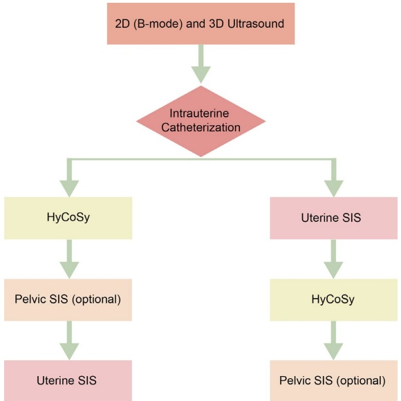
China, the classification system is more detailed and includes patency, partial patency, and complete obstruction. In cases of complete bilateral tubal obstruction, patients are advised to consider in vitro fertilization-embryo transfer (IVF-ET) as a treatment option [1].
Further differentiation of tubal obstruction is possible through laparoscopic chromopertubation, where the site of blockage is categorized as follows:
Proximal Tubal Obstruction: Diagnosed when there is no passage of dye beyond the isthmus of the fallopian tube
Distal Tubal Obstruction: Diagnosed when dye extends beyond the ampulla but fails to reach the infundibulum of the fallopian tube [27]
In China, two primary workflows are followed for HyCoSy, depending on the sequence of salpingo-contrast ultrasound and saline infusion sonohysterography (SIS) (Fig. 5.1):
Flow 1: Salpingo-contrast ultrasound before SIS
- 顺序：
• 首先进行输卵管对比超声。
• 随后进行SIS。
- 优点：
- 可评估输卵管原始状态，不受SIS先前干扰。
3. 缺点：
- 需要反复冲洗宫腔以减少残留微泡的影响，否则可能会妨碍后续SIS检查中的子宫内可视化。
流程2：SIS后进行输卵管对比超声
- 顺序：
• 先进行SIS。
• 随后进行输卵管对比超声。
- 优点：
消除了SIS期间微泡的干扰，确保了高质量的宫腔成像。
有助于更好地三维观察对比导管在宫腔内的相对空间位置，降低了因导管放置不当而导致的假阳性结果的可能性。
当主要目的是评估输卵管通畅性时，推荐流程1，HyCoSy的步骤如下：
1. 常规二维和三维超声检查
(a) 观察子宫、双侧附件区和骨盆。
将经阴道探头放入无菌罩中并插入阴道以
• 观察子宫内膜的厚度。
• 寻找任何子宫腔内的病变或畸形。
• 评估子宫、卵巢和输卵管的病变。
• 检查子宫浆膜的回声（注意是否有钙化）。
• 检查盆腔内是否有积液或任何条状回声。
(b) 调整水球的大小和位置
造影导管的位置和水球的大小对操作和结果都有显著影响。
水球过大：
• 可能因过度压迫宫腔而引起不适和疼痛
• 增加造影剂反流或输卵管痉挛的可能性
- Sequence:
• Perform salpingo-contrast ultrasound first.
• Conduct SIS afterward.
- Advantages:
- Allows evaluation of the primordial status of the fallopian tubes without prior disturbance from SIS
3. Disadvantages:
- Requires repeated rinsing of the uterine cavity to reduce the impact of residual microbubbles, which could hinder intrauterine visualization during the subsequent SIS session
Flow 2: Salpingo-Contrast Ultrasound After SIS
- Sequence:
• Perform SIS first.
• Follow with salpingo-contrast ultrasound.
- Advantages:
Eliminates interference from microbubbles during SIS, ensuring high-quality imaging of the uterine cavity
Facilitates better 3D visualization of the relative spatial position of the contrast catheter within the uterine cavity, reducing the likelihood of false-positive results caused by improper catheter placement
When the primary purpose is evaluating tubal patency, Flow 1 is recommended, with the following step-by-step procedure for HyCoSy:
1. Routine 2D and 3D ultrasonography
(a) Observe the uterus, bilateral adnexa, and pelvis
Put the transvaginal probe into a sterilized cover and insert it into the vagina to
• Observe the thickness of the endometrium.
• Look for any intrauterine lesions or malformations.
• Assess for lesions of the uterus, ovaries, and fallopian tubes.
• Examine the echogenicity of the uterine serosa (noting whether calcification is present).
• Check for fluid accumulation or any strip-like echoes in the pelvic cavity.
(b) Adjust the size and position of the water balloon
The position of the contrast catheter and the size of the water balloon significantly affect both the procedure and results.
Oversized water balloon:
• May cause discomfort and pain due to excessive pressure on the uterine cavity
• Increases the likelihood of contrast reflux or tubal spasms
水球过小：
容易导致导管脱位，这可能会影响操作。水球的最佳大小和位置：
水球应与宫腔的尺寸和宫颈的弹性相匹配。
理想比例：球的上径和下径应占宫腔长度的$ 1/3 $到$ 1/2 $。
球的下缘应与宫颈内口对齐。
• 球应为球形或椭圆形。
- 应轻轻牵拉导管，以确保水球没有脱位，并且导管尖端应避免位于子宫角（如图5.2、5.3和5.4所示）。
(c) 子宫和卵巢的位置以及滑动征象
观察卵巢与子宫的关系，并预先确定输卵管对位区域。用探头轻柔地操作子宫和卵巢，或用手轻按患者下腹部，以观察子宫或卵巢相对于周围组织的滑动情况。在此过程中，应询问患者是否有任何压痛（如图 5.5 和 5.6 所示）。
• 滑动征阳性（+）：子宫、卵巢和周围组织之间存在相对运动，表明滑动征阳性，提示无粘连。
• 滑动征阴性（−）：活动度差或无滑动可能提示存在粘连。这需要进一步检查，以排查盆腔感染或子宫内膜异位症等病变。
2. 实时三维对比超声检查
(a) 初步准备和定位
该检查首先进行三维试扫描，以确定对比平面并找到最佳的观察子宫角和输卵管的位置。目标是将宫腔和双侧卵巢都纳入视野内


Undersized water balloon:
Prone to catheter dislodgement, which may compromise the procedure. Optimal size and position of the water balloon:
The water balloon should match the uterine cavity's dimensions and the cervix's elasticity.
Ideal Proportions: The balloon's upper and lower diameters should account for $ 1/3 $ to $ 1/2 $ of the uterine cavity length.
The lower edge of the balloon should align with the internal cervical os.
• The balloon should be either spherical or ellipsoidal.
- The catheter should be gently pulled to ensure that the balloon is not dislodged, and the catheter tip should avoid positioning in the uterine horns (as shown in Figs. 5.2, 5.3, and 5.4).
(c) Position of the uterus and ovaries and the sliding sign
Observe the position of the ovaries in relation to the uterus and predetermine the area of tubal alignment. Gently manipulate the uterus and ovaries with the probe or apply gentle pressure on the patient's lower abdomen with a hand to observe any sliding of the uterus or ovaries relative to the surrounding tissues. During this process, the patient should be questioned about any tenderness (as shown in Figs. 5.5 and 5.6).
• Sliding sign (+): The presence of relative movement between the uterus, ovaries, and surrounding tissues indicates a positive sliding sign, suggesting no adhesions.
• Sliding sign (−): Poor mobility or the absence of sliding may indicate the presence of adhesions. This requires further investigation for conditions such as pelvic infection or endometriosis.
2. Real-time 3D contrast ultrasonography
(a) Initial preparation and positioning
The procedure begins with a 3D trial scan to identify the contrast plane and determine the best position for visualizing the uterine horns and fallopian tubes. The goal is to include the uterine cavity and both ovaries within


体积扫描。如果无法同时捕获双侧子宫角和卵巢，则可分别对两侧进行造影检查。
通常使用经阴道超声检查，并将子宫置于前倾或后倾位以改善输卵管的观察。如果子宫位置过平卧，导致子宫角出现在远场且使输卵管成像困难，可考虑采用经腹超声检查作为替代方法。为确保最佳成像效果，应调整对比设置、最大化图像帧并最小化背景噪声。
(b) 进行造影检查过程
激活四维造影模式，让助手缓慢注射造影剂或操作送达装置。仔细观察整个过程，从将造影剂注入子宫开始，持续直到造影剂扩散到盆腔为止。
成像时间受输卵管通畅度和患者耐受程度的影响。通常，成像从对比导管可见时开始，持续到获得盆腔稳定的扩散图像为止。对于部分或完全的输卵管阻塞病例，如果患者感到明显不适或宫腔压力超过安全限制，则可能需要停止成像。
在获得满意图像后，保存视频记录以供回顾（参见图 5.7 和图 5.8）。
(c) (可选) 高分辨率成像
如需更多细节，可以获取高分辨率静态三维超声图来观察输卵管。为确保精确可视化，应分别采集左侧和右侧输卵管的体积图像。
- 实时二维对比超声检查
实时二维对比超声检查利用多模态成像，通常以双帧模式进行，以增强可视化和比较。
the volume scan. If it is not possible to capture both uterine horns and ovaries simultaneously, the contrast procedure can be performed separately on each side.
Transvaginal ultrasonography is typically used, with the uterus positioned in either an anteverted or retroverted orientation to improve tubal visualization. If the uterus is positioned too horizontally, causing the uterine horns to appear in the far field and making tubal imaging difficult, transabdominal ultrasonography may be considered as an alternative. To ensure optimal imaging, adjust the contrast settings, maximize the image frame, and minimize background noise.
(b) Performing the contrast procedure
Activate the 4D contrast mode and have an assistant slowly administer the contrast agent or operate the delivery device. Carefully observe the process, starting with the injection of the contrast agent into the uterus and continuing until the agent diffuses into the pelvis.
The timing of image acquisition is influenced by the level of fallopian tube patency and the patient's tolerance. Typically, imaging begins when the contrast catheter is visible and continues until a stable diffusion image of the pelvis is achieved. In cases of partial or complete fallopian tube obstruction, imaging may need to stop if the patient experiences significant discomfort or if uterine cavity pressure exceeds safety limits.
After obtaining satisfactory images, save the video recordings for review (refer to Figs. 5.7 and 5.8).
(c) (Optional) high-resolution imaging
For additional details, high-resolution static 3D ultrasonograms of the fallopian tubes can be captured. To ensure precise visualization, acquire volume images of the left and right fallopian tubes separately.
- Real-time 2D contrast ultrasonography
Real-time 2D contrast ultrasonography utilizes multimodal imaging, often performed in dual-frame mode, for enhanced visualization and comparison.


(a) 造影模式下的二维观察
首先在造影模式下描绘输卵管的轨迹（参见图 5.9、图 5.10 和图 5.11）。重点评估造影剂的流动性，特别注意它如何环绕盆腔周围区域流动并在整个盆腔扩散（参见图 5.12）。
(a) 2D observation in contrast mode
Begin by tracing the trajectory of the fallopian tubes in contrast mode (refer to Figs. 5.9, 5.10, and 5.11). Focus on evaluating the fluidity of the contrast agent, paying close attention to how it flows around the periovarian region and disperses throughout the pelvis (refer to Fig. 5.12).


(b) B模式或彩色多普勒模式
切换到B模式或彩色多普勒模式，观察造影剂与周围解剖结构的关系。追踪其在输卵管内的轨迹，确保详细评估以下内容：
• 输卵管是否存在扩张
• 输卵管末端部分的形态
• 输卵管壁的回声
此步骤为先前评估的造影模式提供了关键的补充信息（参见图 5.13、5.14、5.15 和 5.16）。
4. 盆腔生理盐水灌注超声（SIS）
盆腔生理盐水灌注超声（SIS）是通过持续通过原造影剂导管注入50–200 mL的0.9%生理盐水来完成的。无回声液体可以通过超声观察到其经输卵管进入盆腔并积聚在盆腔内。生理盐水灌注超声（SIS）能有效地显示输卵管纤毛的活动情况，揭示它们是自由摆动还是受限（参见图5.17和图5.18）。
此外，生理盐水灌注超声（SIS）还可以用于识别盆腔内条状或异常肿块回声。然而，由于输卵管通畅程度的差异，该检查可能仅在部分患者中才能成功进行。
- 子宫生理盐水灌注超声（SIS）
(a) 球囊减压：
球囊内的液体量应减少至 0.5–1.0 mL，以获得清晰的宫腔视野，同时防止导管脱落。球囊的上径和下径应占宫腔长度的约 1/5 至 1/4。
(b) 2D 阴性对比
通过导管注入生理盐水反复冲洗宫腔。此操作可最大程度地减少残留微泡对
(b) B-mode or color doppler mode
Switch to B-mode or color Doppler mode to observe the contrast agent in relation to surrounding anatomical structures. Track the agent's trajectory within the fallopian tubes, ensuring detailed evaluation of the following:
• The presence of dilatation in the fallopian tubes
• The morphology of the fimbrial part
• The echogenicity of the tubal wall
This step provides critical complementary information to the previously assessed contrast patterns (refer to Figs. 5.13, 5.14, 5.15, and 5.16).
4. Pelvic SIS
Pelvic SIS is performed by continuing the injection of 50–200 mL of 0.9% saline through the original contrast catheter. The anechoic fluid can be visualized by ultrasound as it enters the pelvis through the fallopian tubes and accumulates in the pelvic cavity. SIS effectively demonstrates the movement of the tubal fimbriae, revealing whether they are swinging freely or are restricted (refer to Figs. 5.17 and 5.18).
Additionally, SIS allows for the identification of strip-like or abnormal mass echoes within the pelvis. However, this examination may only be successfully performed in some patients due to varying degrees of tubal patency.
- Uterine SIS
(a) Reduction of the balloon:
The fluid in the balloon should be reduced to 0.5–1.0 mL to obtain a clear view of the uterine cavity while preventing the catheter from dislodging. The upper and lower diameters of the balloon should account for approximately 1/5 to 1/4 of the length of the uterine cavity.
(b) 2D negative contrast
The uterine cavity is repeatedly rinsed by injecting saline through the catheter. This procedure minimizes residual microbubbles' impact on the


宫腔显示并有助于扩张。子宫生理盐水灌注超声（SIS）在评估传统二维和三维超声难以鉴别的异常，如子宫内膜息肉、宫腔粘连、黏膜下子宫平滑肌瘤和剖宫产瘢痕妊娠缺损等方面特别有效（参见图5.19和5.20）。
6. 图像分析和报告
回放捕获的图像并进行后处理以提高质量。根据造影剂流动特定的时间和方向选择必要的图像，并将其汇编成一份综合报告。
报告应包括四个关键部分：
(a) 常规超声发现：描述在标准超声检查过程中观察到的子宫、卵巢和盆腔情况
(b) 子宫形态和疾病：详细评估子宫结构以及检测到的任何异常或疾病


uterine cavity display and helps expand it. Uterine SIS is particularly effective for assessing abnormalities that are difficult to distinguish on conventional 2D and 3D ultrasound, such as endometrial polyps, intrauterine adhesions, submucosal leiomyomas, and cesarean scar defects (refer to Figs. 5.19 and 5.20).
6. Image analysis and reporting
Replay the captured images and perform postprocessing to refine the quality. Select the necessary images based on the specific times and directions of the contrast agent's flow and compile these into a comprehensive report.
The report should include four key sections:
(a) Routine ultrasound findings: A description of the uterus, ovaries, and pelvis as observed during the standard ultrasound scan
(b) Uterine morphology and diseases: A detailed assessment of the uterine structure and any abnormalities or diseases detected
(c) 输卵管通畅性：基于对比成像评估和诊断输卵管通畅性
(d) 盆腔内造影剂弥散：描述了造影剂如何在盆腔内弥散，从而提供了关于解剖结构和潜在问题的见解
5.3.3 超声图像的正常表现和分析
1. 子宫的正常表现
在正常的子宫中，子宫肌层无对比回声。造影剂充满宫腔，无充盈缺损。宫腔通常呈三角形（参见图5.21），宫底平坦，腔面边界清晰。其容量范围为3至5 mL，通常可容纳5–7 mL液体。
放置在宫腔下部的气球可能表现为充盈缺损。子宫的张力会影响腔内的观察，局部收缩可能引起部分缺损，使人感觉造影剂流动受阻。输卵管角可能呈尖锐、绞窄或钝圆状，但在大多数情况下，两侧是对称的。
2. 输卵管的正常表现
在评估输卵管通畅性时，通常将其分为三个部分进行详细观察：近端段、中远端段和远端指缘。每个输卵管（共六个节段）均分别观察并描述，如图 5.22 和 5.23 所示。
近端段：重点关注输卵管与子宫角之间的连接处。
中远端段：注意输卵管的走行方向、直径以及输卵管壁是否光滑。
指缘：观察造影剂溢出情况，检查是否有造影剂聚集。
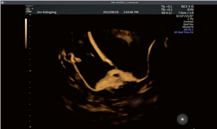
(c) Tubal patency: An evaluation and diagnosis of the fallopian tubes' patency based on contrast imaging
(d) Contrast dispersion in the pelvis: A description of how the contrast agent disperses within the pelvic cavity, providing insights into the anatomy and potential issues
5.3.3 Normal Images and Analysis of Ultrasound Images
1. Normal manifestations of the uterus
In a normal uterus, the myometrium shows no contrast echoes. The contrast medium fills the uterine cavity without any filling defects. The uterine cavity typically has a triangular shape (refer to Fig. 5.21), with a flat fundus and a well-defined cavity surface. Its volume ranges from 3 to 5 mL, and it can usually be filled with 5–7 mL of fluid.
A balloon placed in the lower part of the uterine cavity may appear as a filling defect. The uterus's tension can affect the visualization of the cavity, where local contractions may cause partial defects that seem to disrupt the flow of contrast. The uterine horns may appear pointed, strangulated, or obtuse, but in most cases, they are symmetrically shaped on both sides.
2. Normal manifestations of the fallopian tubes
When assessing the patency of the fallopian tubes, they are typically divided into three segments for detailed observation: the proximal segment, the mid-distal segment, and the distal fimbriae. Each fallopian tube (six segments in total) is visualized and described separately, as shown in Figs. 5.22 and 5.23.
Proximal segment: Focus on the connection between the fallopian tube and the uterine horn.
Mid-distal segment: Pay attention to the direction of the fallopian tube's course, its diameter, and whether the tubal wall appears smooth.
Fimbriae: Observe the overflow of the contrast agent, checking for any aggregation of the contrast.
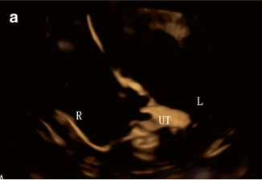
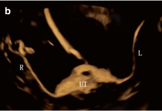
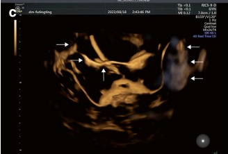
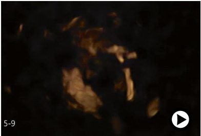
(a) 正常输卵管走行（图 5.24）：
输卵管的正常走行可根据其相对于宫腔的位置分为四种类型：
• 上行型：双侧输卵管向上弯曲，位于子宫底旁。
• 下行型：双侧输卵管向下弯曲。
• 反转型：一侧输卵管上行，另一侧下行。
- 水平型：输卵管从子宫体水平向两侧延伸。
(b) 通畅的输卵管（图 5.25 和 5.26）：
对于通畅的输卵管，整个过程中都能看到双侧输卵管。造影剂从宫腔进入输卵管并迅速到达远端部分。输卵管看起来清晰，壁光滑，有正常的走行，无肿胀。关键观察点包括以下几点：
大量造影剂从双侧输卵管的边缘排出。
造影剂均匀地弥散到盆腔内。
子宫腔没有明显的充盈。
注入造影剂时，无阻力，或在施加额外压力时阻力突然消失。
患者在操作过程中疼痛轻微或无痛。
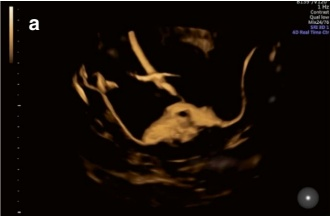
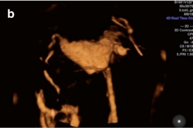
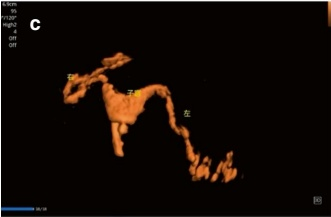
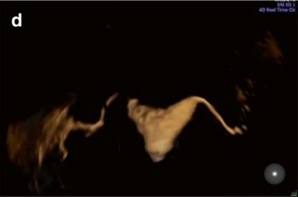
(a) Normal tubal trajectory (Fig. 5.24):
The normal trajectory of the fallopian tubes can be classified into four types based on their position relative to the uterine cavity:
• Ascending type: The tubes curve upward on both sides of the uterine fundus.
• Descending type: The tubes curve downward on both
• Reversed type: One tube ascends, while the other descends.
- Horizontal type: The tubes extend from the level of the uterine body to both sides.
(b) Patent fallopian tubes (Figs. 5.25 and 5.26):
In cases of patent fallopian tubes, both tubes are visualized throughout the entire process. The contrast agent enters the fallopian tubes from the uterine cavity and quickly reaches the distal part. The fallopian tubes appear clear, with smooth walls, a natural trajectory, and no swelling. Key observations include the following:
A large amount of contrast agent is expelled from the fimbriae of both tubes.
The contrast agent disperses uniformly throughout the pelvis.
The uterine cavity does not exhibit significant swelling.
When injecting the contrast agent, no resistance is encountered, or the resistance disappears suddenly when additional pressure is applied.
The patient experiences little to no pain during the procedure or only mild discomfort.
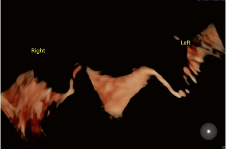
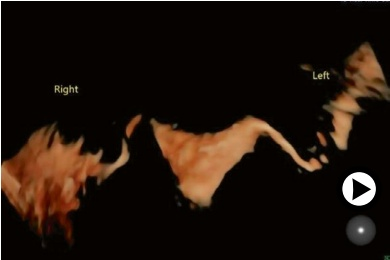
5.3.4 异常图像和超声图像分析
- 子宫腔的异常表现
(a) 先天子宫畸形：
子宫腔形态的异常，如单角子宫、纵隔子宫或双子宫，通常在造影检查中可见。当使用冠状面3D超声评估子宫畸形的诊断准确率约为97.6%，而使用生理盐水灌注超声（SIS）时约为96.5% [28]。因此，在造影检查过程中纳入常规的3D成像来评估潜在的子宫畸形至关重要。
此外，对于纵隔子宫病例，其凹陷的深度不应在造影检查中测量，而应在3D冠状面进行评估（图5.27）。
5.3.4 Abnormal Images and Analysis of Ultrasound Images
- Abnormal manifestations of the uterine cavity
(a) Congenital uterine anomalies:
Abnormalities in the morphology of the uterine cavity, such as a unicornuate uterus, septate uterus, or double uterus, are typically visible on contrast imaging. The diagnostic accuracy for identifying uterine anomalies is approximately 97.6% when assessed in the coronal plane with 3D ultrasound and about 96.5% with SIS [28]. Therefore, it is crucial to incorporate regular 3D imaging to assess potential uterine malformations during contrast imaging.
Additionally, the depth of the depression in cases of a septate uterus should not be measured during contrast imaging but should be evaluated in the 3D coronal plane (Fig. 5.27).
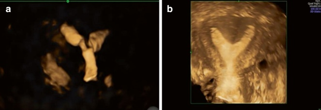
(b) 宫腔粘连：
宫腔粘连表现为跨越宫腔的不规则充盈缺损（图5.28和5.29）。这些粘连导致宫腔容积减小。随着造影剂体积的增加，充盈缺损的位置保持不变，周围张力增加。
(c) 子宫内占位病变：
宫腔内占位性病变，如子宫内膜息肉或黏膜下肌瘤，在使用造影成像时可表现为单个或多个边界清晰的圆形充盈缺损。子宫生理盐水灌注超声（SIS）能更清晰地显示病变的部位、大小、数量和范围，以及其基底与子宫内膜或子宫肌层的关系（图 5.30），有助于明确诊断。
(d) 剖宫产瘢痕妊娠缺损：
剖宫产瘢痕妊娠缺损表现为前壁疤痕处的造影充盈。在子宫前壁下段的剖宫产瘢痕妊娠处，子宫肌层连续性中断可于子宫生理盐水灌注超声（SIS）上显示为三角形、楔形或不规则的凹陷（图 5.31 和 5.32）。
2. 造影剂返流
造影剂反流是指造影剂从子宫意外地进入子宫肌层、输卵管、盆腔静脉和盆腔淋巴血管，并通过异常通路。这最终会导致其重新进入循环系统 [29]。反流通常表现为子宫和/或周围输卵管内出现异常的成像模式，包括混浊的、蚯蚓状或网格状的结构。这些结构可能与输卵管非常相似，给分析输卵管造影图像带来了重大挑战。
造影剂反流有三种不同的类型，如图 5.33 和 5.34 所示：
(b) Intrauterine adhesion:
Intrauterine adhesions present as irregular filling defects across the uterine cavity (Figs. 5.28 and 5.29). These adhesions lead to a reduction in the volume of the uterine cavity. As the volume of the contrast agent increases, the position of the filling defect remains unchanged, and there is an increase in peripheral tension.
(c) Intrauterine space-occupying pathologies:
Space-occupying lesions such as endometrial polyps or submucosal fibroids may appear as single or multiple round filling defects with well-defined borders within the uterine cavity when using contrast imaging. Uterine SIS provides clearer visualization of the lesion's location, size, number, and extent, as well as the relationship of its base to the endometrium or myometrium (Fig. 5.30), aiding in a definitive diagnosis.
(d) Cesarean scar defects:
Cesarean scar defects are observed as contrast filling at the scar on the anterior uterine wall. Discontinuity of the myometrium at the cesarean scar in the lower part of the anterior wall of the uterus can be visualized on uterine SIS as a triangular, wedge-shaped, or irregular indentation (Figs. 5.31 and 5.32).
2. Reflux of contrast agent
Contrast agent reflux refers to the unintended movement of the contrast agent from the uterus into the myometrium, the muscular layer of the fallopian tubes, para-uterine veins, and pelvic lymphatic vessels through abnormal pathways. This leads to its eventual re-entry into the circulatory system [29]. Reflux typically manifests as abnormal imaging patterns, including cloudy, earthworm-like, or grid-like formations within the uterus and/or surrounding the fallopian tubes. These patterns can closely resemble the fallopian tubes, presenting a significant challenge in analyzing tubal contrast images.
There are three distinct types of contrast agent reflux, as shown in Figs. 5.33 and 5.34:
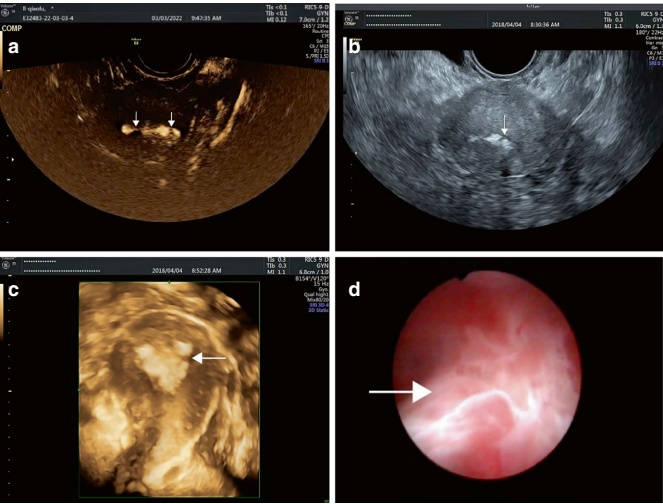
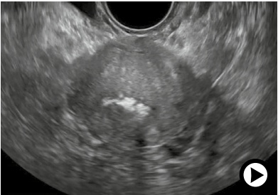
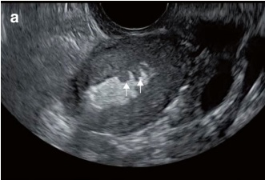
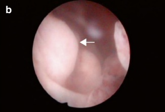
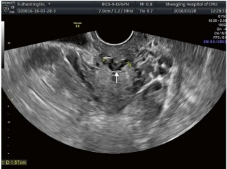
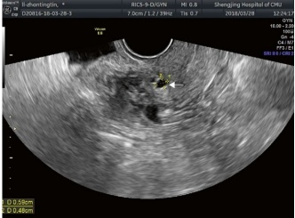
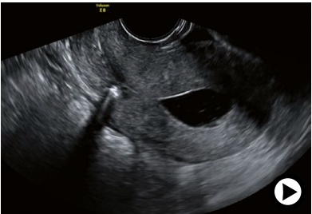
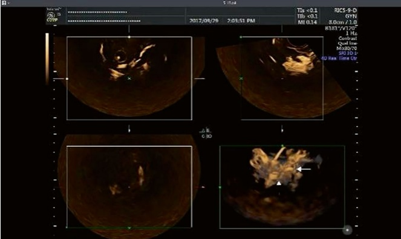
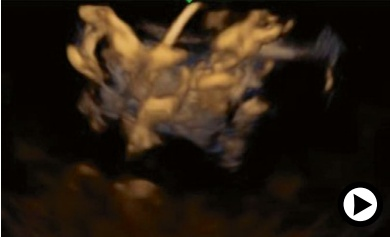
• 间质淋巴回流
• 静脉回流
- 混合性返流：最常见的一种类型，其特征是在造影成像上可见导管静脉返流和细网状或混浊的淋巴返流。
造影剂返流的主要病因包括以下几点：
子宫内高压：通常由输卵管完全或部分梗阻引起
子宫和输卵管壁损伤：通常是子宫或输卵管的器质性病变所致
• 子宫或输卵管痉挛
• Interstitial-lymphatic reflux
• Venous reflux
- Mixed reflux: The most common type, characterized by ductal venous reflux and fine mesh-like or cloudy lymphatic reflux on contrast imaging.
The primary causes of contrast agent reflux include the following:
High intrauterine pressure: Often caused by a complete or partial obstruction of the fallopian tubes
Endometrial and tubal wall injuries: Typically resulting from organic pathologies of the uterus or fallopian tubes
• Spasms of the uterus or fallopian tubes
当检查过程中观察到造影剂反流时，应暂停操作仔细评估图像。动态逐帧回放有助于分析反流情况，重点关注以下几点：
• 输卵管图像
• 盆腔造影弥散
- 造影剂返流的具体模式
调整增益并旋转图像以获得不同视角通常很有用。此外，切换到二维造影模式或B模式可以更好地观察返流部位及其与周围结构的关系。
对于严重返流且仍无法清晰观察的情况，可考虑让患者休息约15分钟后再进行第二次造影检查。在第二次尝试时，应更缓慢地注射造影剂。此方法通常能减少返流，有助于更好地观察输卵管。
3. 输卵管通畅性异常
输卵管通畅性通常采用二分法进行分类：通畅或阻塞 [30]。相比之下，中国的分类系统将输卵管通畅性分为三个级别：通畅、部分阻塞和完全阻塞。
(a) 部分阻塞的输卵管（图 5.35 和 5.36）
部分阻塞的输卵管具有以下特征：
• 输卵管可能显得细、僵硬或迂曲盘绕，呈不连续的珠状外观。
• 或者，它们可能肿胀并扩张，少量造影剂从指缘溢出。
• 造影剂在盆腔内分散不均。
• 子宫腔可能显示扩张。
• 注射造影剂时可能会感觉到阻力；患者通常报告轻度至中度疼痛。
(b) 输卵管梗阻（图5.37、5.38和5.39）
输卵管梗阻根据阻塞部位可分为两类：
• 近端梗阻：影响间质部和峡部
• 远端梗阻：影响囊端和输卵管口
关键的影像学特征包括以下几点：
受梗阻的输卵管可能表现为缺失、部分或完全可见，常伴有不规则、细小、僵硬或结节状壁。
在远端段常可见“截断征”，且没有造影剂从输卵管末端溢出。
宫腔可能显得扩大，呈圆弧形的子宫角，并可观察到造影剂反流至子宫肌层。
操作过程中，操作者感觉到注射造影剂时有高阻力。
• 患者通常感到剧烈疼痛。
When contrast agent reflux is observed during an examination, the procedure should be paused to evaluate the images carefully. Dynamic frame-by-frame playback can help analyze the reflux, focusing on the following:
• Tubal images
• Pelvic contrast dispersion
- The specific patterns of contrast agent reflux
Adjusting the gain and rotating the image for different perspectives is often useful. Additionally, switching to 2D contrast mode or B-mode allows better visualization of the reflux site and its relationship to surrounding structures.
A second contrast examination may be considered after the patient rests for approximately 15 min in severe reflux that remains unclearly visualized. During the second attempt, the contrast agent should be injected more slowly. This method often reduces reflux, facilitating improved visualization of the fallopian tubes.
3. Abnormal tubal patency
Tubal patency is commonly categorized using a dichotomous approach: patent or obstructed [30]. In contrast, the classification system in China divides tubal patency into three grades: patent, partially obstructed, and obstructed.
(a) Partially obstructed fallopian tubes (Figs. 5.35 and 5.36)
Partially obstructed fallopian tubes exhibit the following characteristics:
• The tubes may appear thin, rigid, or tortuously coiled, with a discontinuous bead-like appearance.
• Alternatively, they may be swollen and dilated, with a small amount of contrast agent spilling from the fimbriae.
• The contrast agent disperses unevenly in the pelvis.
• The uterine cavity may show distension.
• Resistance may be felt during contrast injection; the patient typically reports mild to moderate pain.
(b) Obstructed fallopian tubes (Figs. 5.37, 5.38, and 5.39)
Tubal obstruction is divided into two categories based on the location of the blockage:
• Proximal obstruction: Affects the interstitial part and isthmus
• Distal obstruction: Affects the ampulla and infundibulum
Key imaging characteristics include the following:
The obstructed fallopian tube may appear absent, partially or fully visualized, often with irregular, thin, stiff, or nodular walls.
A “cut-off sign” is often seen in the distal section, and no contrast agent spills from the fimbriae.
The uterine cavity may appear enlarged, with rounded uterine horns, and contrast reflux into the myometrium may be observed.
During the procedure, the operator perceives high resistance when injecting the contrast agent.
• The patient typically experiences significant pain.
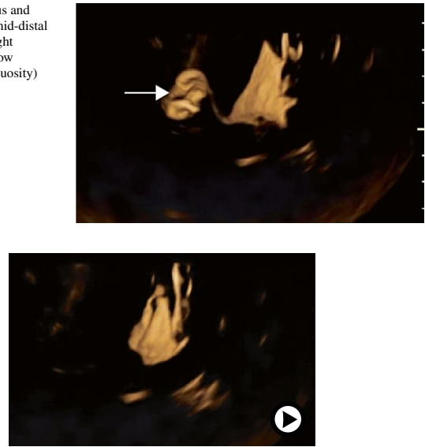
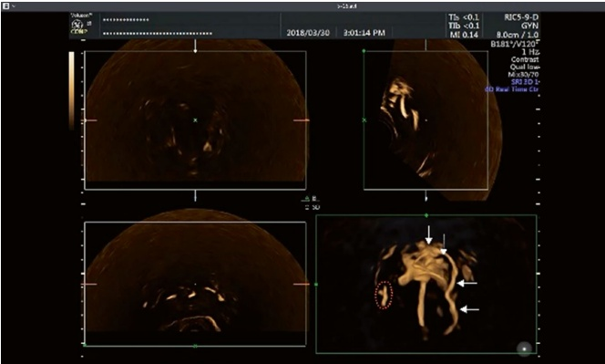
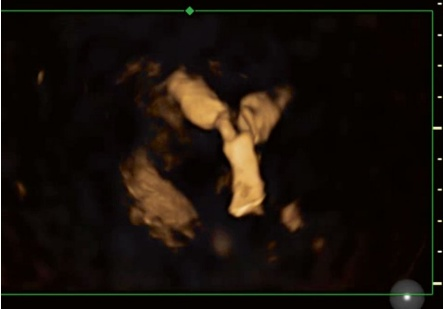
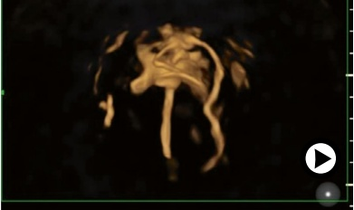
(c) 输卵管积水（图 5.40、5.41、5.42 和 5.43）
输卵管积水，是由于远端输卵管梗阻引起的病症，根据输卵管近端段与宫腔的通畅性进行分类：
• 近端段通向宫腔。
• 近端段不通向宫腔。
这两种情况对临床管理具有不同的意义：
当近端段通畅时，积液可能反流至宫腔，通常需要手术干预，如切除、结扎或栓塞受影响的输卵管，以提高胚胎移植的成功率 [31]。
当近端段不通畅时，造影剂无法进入输卵管，在造影检查上看不到。
(c) Hydrosalpinx (Figs. 5.40, 5.41, 5.42, and 5.43)
Hydrosalpinx, a condition resulting from distal tubal obstruction, is categorized based on the patency of the proximal segment of the fallopian tube to the uterine cavity:
• The proximal segment is patent to the uterine cavity.
• The proximal segment is not patent to the uterine cavity.
These two conditions have different implications for clinical management:
When the proximal segment is patent, effusion may reflux into the uterine cavity, often requiring surgical intervention such as resection, ligation, or plugging of the affected fallopian tube to improve the success of embryo transfer [31].
When the proximal segment is not patent, the contrast agent cannot enter the fallopian tube and does not appear on contrast imaging.
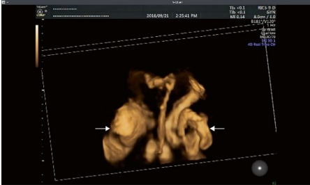
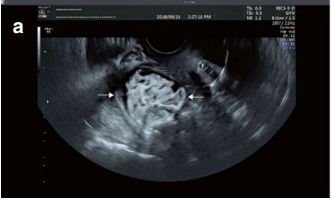
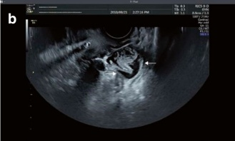
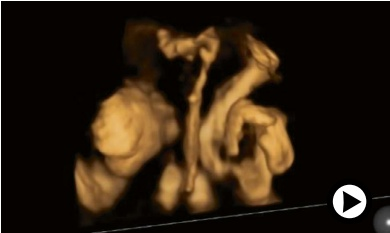
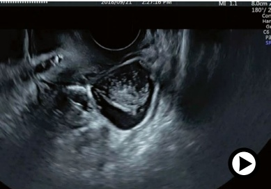
关键的影像学特征包括以下几点：
对于近端通畅性，造影成像显示造影剂充满扭曲、扩张的输卵管，伴有远端输卵管闭锁，但没有造影剂从指缘排出。
- 操作者在注射过程中可能会感觉到阻力，并且这种阻力通常持续存在。
- 盆腔粘连（图5.44、5.45和5.46）
盆腔粘连的特点是在盆腔内造影剂扩散不均匀或呈区域性限制，在超声图像上表现为条状高回声影（图5.44、5.45和5.46）。这些影反映了粘连带对正常盆腔解剖结构的限制。
5.3.5 临床应用和诊断要点
虽然子宫输卵管超声造影（HyCoSy）在检测输卵管因素不孕方面具有很高的准确性，但由于异常纤毛运动、输卵管狭窄和造影剂使用不当等因素，仍可能出现误诊或漏诊。在临床实践中，必须结合多种超声检查模式和患者的病史，才能对子宫、输卵管和盆腔病变做出全面的诊断。以下病例将提供更直观和具体的诊断过程理解。本节将列举几个病例，以帮助读者更直观、具体地理解诊断过程。
Key imaging characteristics include the following:
For proximal patency, contrast imaging shows the contrast agent filling a tortuous, dilated fallopian tube with distal tubal atresia, but no contrast agent exits the fimbriae.
- The operator may perceive resistance during injection, and it often persists.
- Pelvic adhesions (Figs. 5.44, 5.45, and 5.46)
Pelvic adhesions are characterized by uneven diffusion or zonal confinement of the contrast agent within the pelvis, resulting in strip-like echogenic patterns visible on ultrasound imaging (Figs. 5.44, 5.45, and 5.46). These patterns reflect the restriction of normal pelvic anatomy caused by adhesion bands.
5.3.5 Clinical Applications and Diagnostic Tips
While HyCoSy is highly accurate in detecting tubal factor infertility, false diagnoses or missed cases can occur due to factors such as abnormal ciliary movement, tubal stenosis, and improper contrast agent usage. In clinical practice, it is essential to combine multiple ultrasound modalities with the patient's clinical history to arrive at a comprehensive diagnosis of uterine, tubal, and pelvic pathologies. The following clinical cases will provide a more intuitive and concrete understanding of the diagnostic process. The following section will present several patient cases to provide a more intuitive and concrete understanding of the diagnostic process.
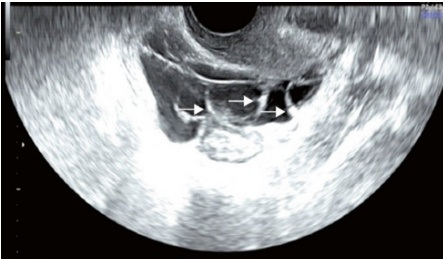
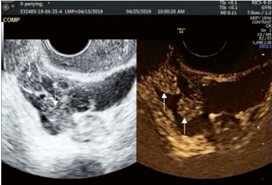
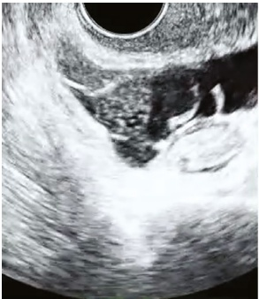
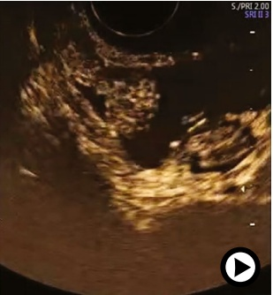
病例1
- 病史：
一名24岁的女性，月经不规则（周期长度：32–90天，月经期长度：4天），月经量正常，无痛经。她几年前被诊断患有多囊卵巢综合征（PCOS），既往未妊娠，并已为备孕两年而努力。
子宫输卵管超声造影（HyCoSy）检查（图5.47和图5.48）
分析与诊断
(a) B模式超声：
子宫前倾，轮廓光滑完整，回声均匀。宫腔内可见水球状结构。子宫肌层未见明显病变。左侧卵巢位于子宫外侧，活动度良好；右侧卵巢靠近子宫，活动度良好。双侧卵巢可见多囊改变（图 5.48）。双侧附件区未见明显病变。
(b) 超声造影：
双侧输卵管完全可及，壁清晰，对位正常。形态光滑，造影剂从双侧输卵管的输卵管伞端排出。造影剂均匀分散于两侧卵巢周围，子宫肌层未见造影剂返流。
(c) 盆腔内发现：
造影增强显示造影剂均匀包绕双侧卵巢，并在盆腔内呈均匀分布（图 5.48）。未见异常发现，提示无盆腔粘连。注射过程中无阻力感，患者报告术中无痛。这些发现提示双侧输卵管通畅。
(d) 生理盐水灌注超声（SIS）成像：
图 5.47 双侧输卵管通畅
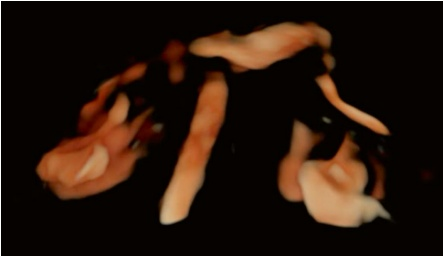
Case 1
- Patient history:
A 24-year-old female with irregular menstruation (cycle length: 32–90 days, menstrual period length: 4 days), normal menstrual volume, and no dysmenorrhea. She had been diagnosed with polycystic ovary syndrome (PCOS) several years ago, had not been pregnant, and had been struggling with infertility for 2 years.
HyCoSy imaging (Figs. 5.47 and 5.48)
Analysis and diagnosis
(a) B-mode ultrasound:
The uterus was anteverted with smooth, intact contours and homogeneous echogenicity. A water balloon was clearly visualized in the uterine cavity. No apparent lesions were observed in the myometrium. The left ovary was located away from the uterus and had good mobility, while the right ovary was positioned closer to the uterus and had good mobility. Bilateral ovarian polycystic changes were noted (Fig. 5.48). No significant lesions were observed in the bilateral adnexal areas.
(b) Contrast-enhanced ultrasound:
The bilateral fallopian tubes were fully visualized, with well-defined walls and normal alignment. The morphology appeared smooth, with the contrast agent being discharged from the fimbriae of both fallopian tubes. The contrast medium dispersed evenly around the ovaries on both sides, and no contrast reflux was seen in the myometrium.
(c) Intrapelvic findings:
Contrast enhancement revealed the even encapsulation of the contrast medium around both ovaries, with a homogeneous distribution in the pelvis (Fig. 5.48). No abnormal findings were noted, indicating the absence of intrapelvic adhesions. No resistance was felt during the injection, and the patient reported no pain during the procedure. These findings suggest bilateral patent fallopian tubes.
(d) SIS imaging:
Fig. 5.47 Bilateral fallopian tubes were patent
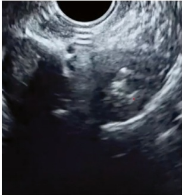
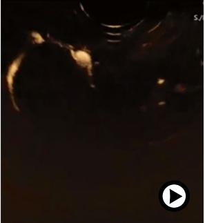
生理盐水灌注超声（SIS）显示宫腔形态正常，无明显异常。
4. 医学建议：
考虑到输卵管通畅以及患者年龄（未满 35 岁），建议她尝试自然受孕。由于其患有多囊卵巢综合征，如自然受孕未能成功，可考虑辅助促排卵或人工授精。
病例2
- 病史：
一名37岁的女性，月经周期规律（周期长度：26-30天，月经期长度：3-5天），月经量少，无痛经。她有两次妊娠但均未足月流产，并已为不孕问题困扰了1年。患者经历了两次胚胎停育和两次IVF失败。男性伴侣的检查结果正常。
子宫输卵管超声造影（HyCoSy）成像（图5.49、5.50和5.51）
分析与诊断
(a) B模式超声：
子宫前倾，轮廓光滑完整，回声均匀。宫腔内清晰可见水球样结构。子宫肌层未见明显病变。左侧卵巢位于子宫体后方，靠近子宫体，活动度良好；右侧卵巢远离子宫体，活动度也良好。双侧附件区未见病变。
(b) 超声造影（图5.51）：
子宫腔边界清晰，形态规则。双侧输卵管完全可及，左侧输卵管略有延迟。输卵管壁边界清楚，对位正常，形态平滑——
SIS showed normal uterine cavity morphology with no obvious abnormalities.
4. Medical advice:
Given the presence of patent fallopian tubes and the patient's age (under 35 years), it was advised that she attempt to conceive naturally. Due to her PCOS, assisted ovulation or artificial insemination may be considered if natural conception does not occur.
Case 2
- Patient history:
A 37-year-old female with regular menstruation (cycle length: 26–30 days, menstrual period length: 3–5 days), low menstrual volume, and no dysmenorrhea. She had two pregnancies with no live births and had been struggling with infertility for 1 year. The patient experienced two embryo arrests and two IVF failures. The male partner's test results were normal.
HyCoSy imaging (Figs. 5.49, 5.50, and 5.51)
Analysis and diagnosis
(a) B-mode ultrasound:
The uterus was anteverted with smooth, intact contours and homogeneous echogenicity. A water balloon was clearly visualized in the uterine cavity. No obvious lesions were observed in the myometrium. The left ovary was situated posteriorly and close to the uterine body with good mobility, while the right ovary was located distant from the uterine body, also with good mobility. No lesions were noted in the bilateral adnexal areas.
(b) Contrast-enhanced ultrasound (Fig. 5.51):
The uterine cavity was well-defined, with regular morphology. Bilateral fallopian tubes were fully visualized, with a slight delay in the left tube. The tubal walls were well-defined, with normal alignment and smooth morphol-
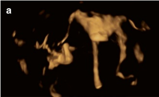
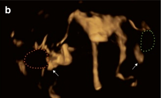
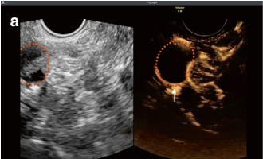
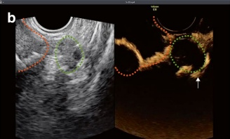
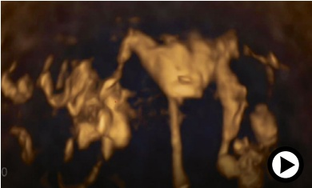
从输卵管纤毛处排出造影剂。造影剂均匀分散于卵巢周围。子宫肌层未见造影剂反流，注射时无明显阻力，患者无疼痛感。
(c) 盆腔内发现：
造影增强显示造影剂均匀包绕双侧卵巢，盆腔内分布均匀（图 5.50 和 5.51）。未见异常发现，提示盆腔内无粘连。
(d) 生理盐水灌注超声（SIS）成像：
生理盐水灌注超声（SIS）显示宫腔形态正常，无明显异常。
4. 医学建议：
考虑到患者年龄（超过 35 岁）和既往辅助生殖技术失败史，建议其短期尝试自然受孕。鉴于患者反复发生胎儿停育，还建议其进行子宫内膜容受性检查和治疗，为下一次 IVF 周期做准备。
病例 3
1. 患者病史：
一名32岁的女性，月经周期规律（周期长度：30天，月经期长度：4-5天），月经量少，无痛经。她曾一次妊娠但未分娩，并已为不孕问题困扰了3年。六个月前，患者的HSG检查显示造影剂注入平滑，宫腔形状和大小正常，无明确充盈缺损。双侧输卵管走行僵硬，无扩张或积液，双侧远端造影剂扩散轻度受限。
- 子宫输卵管超声造影（HyCoSy）检查（图 5.52、5.53 和 5.54）
3. 分析和诊断
(a) B模式超声：
子宫前倾，轮廓光滑完整，回声均匀。宫腔内可见水球。子宫肌层未见病变。左侧卵巢位于子宫体后方且距离较远，活动度良好；右侧卵巢靠近子宫体，活动度也良好。双侧附件区未见病变。
(b) 超声造影：
宫腔边界清晰，形态规则。双侧输卵管完全可见，壁光滑，走行平直。少量造影剂从双侧输卵管的输卵管口溢出。在对比增强的晚期，左侧卵巢周围可见造影剂弥散。少量造影剂缓慢从右侧输卵管的输卵管口排出，呈束状分布。右侧卵巢周围可见均匀的造影剂弥散，并伴有少量连
ogy. Discharge of the contrast agent from fimbriae was observed. The contrast medium was dispersed evenly around the ovaries. No contrast reflux was seen in the myometrium, and little resistance was felt during injection, with no pain reported by the patient.
(c) Intrapelvic findings:
Contrast enhancement revealed even encapsulation of the contrast medium around both ovaries, with a homogeneous distribution in the pelvis (Figs. 5.50 and 5.51). No abnormal findings were noted, indicating the absence of intrapelvic adhesions.
(d) SIS imaging:
SIS showed normal uterine cavity morphology with no obvious abnormalities.
4. Medical advice:
Given the patient's age (over 35 years) and history of failed IVF attempts, she was advised to try to conceive for a short period. In light of the patient's repeated fetal arrests, she was also advised to undergo an endometrial tolerance examination and treatment in preparation for another IVF cycle.
Case 3
1. Patient history:
A 32-year-old female with regular menstruation (cycle length: 30 days, menstrual period length: 4–5 days), low menstrual volume, and no dysmenorrhea. She had one pregnancy with no delivery and had been struggling with infertility for 3 years. Six months ago, the patient's HSG examination showed smooth contrast agent injection, normal shape and size of the uterine cavity with no definite filling defects. Bilateral tubal alignment was stiff, with no dilatation or fluid accumulation, and bilateral distal contrast agent diffusion was slightly restricted.
- HyCoSy imaging (Figs. 5.52, 5.53, and 5.54)
3. Analysis and diagnosis
(a) B-mode ultrasound:
The uterus was anteverted, with smooth and intact contours and homogeneous echogenicity. The water balloon was visualized in the uterine cavity. No lesions were observed in the myometrium. The left ovary was positioned posteriorly and distantly from the uterine body with good mobility, while the right ovary was situated closer to the uterine body, also with good mobility. No lesions were seen in the bilateral adnexal areas.
(b) Contrast-enhanced ultrasound:
The uterine cavity was well-defined with regular morphology. The bilateral fallopian tubes were fully visualized, with smooth walls and rigid alignment. A very small amount of contrast agent overflowed from the fimbriae of both fallopian tubes. Contrast agent diffusion was seen around the left ovary during the late phase of contrast enhancement. A small amount of contrast agent was discharged slowly from the fimbriae of the right fallopian tube, exhibiting a bunch-like pattern. A homogeneous diffusion of contrast medium was seen around the right ovary, along with a small amount of con
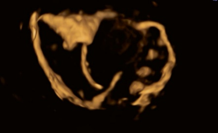
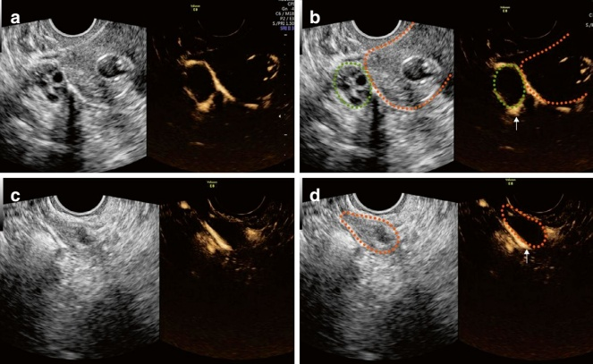
造影剂回流至子宫肌层。根据这些发现，诊断为双侧输卵管部分梗阻，其中左侧输卵管受累更重。
(c) 盆腔内发现：
盆腔内超声检查显示双侧卵巢活动度良好，无压痛。造影增强显示盆腔内造影剂弥散均匀（图 5.54），提示无明显粘连。
trast agent reflux in the myometrium. Based on these findings, the diagnosis was partial obstruction of both fallopian tubes, with the left fallopian tube being more severely affected.
(c) Intrapelvic findings:
During intrapelvic scanning, ultrasound revealed good mobility of both ovaries with no tenderness. Contrast enhancement showed homogeneous diffusion of the contrast medium in the pelvic cavity (Fig. 5.54), indicating no significant adhesions.
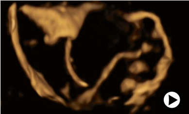
(d) 生理盐水灌注超声（SIS）成像：
生理盐水灌注超声（SIS）显示宫腔形态正常，无明显异常。
- 医疗建议：
考虑到患者的年龄、病史以及双输卵管均有明显的僵硬和造影剂缓慢少量渗出，建议患者尽早接受体外受精治疗。
病例4
- 病史：
患者为一名34岁的女性，月经周期不规律。她有一次妊娠但未分娩，并有一次胚胎停育，报告无生育史达一年半。2年前进行的子宫输卵管造影显示造影剂注入平滑，宫腔大小和形状正常。然而，左侧输卵管未见，右侧输卵管可见部分，但远端末端不可见。
子宫输卵管超声造影（HyCoSy）检查（图5.55、5.56、5.57、5.58和5.59）
分析与诊断
(a) B模式超声发现：
子宫前倾，轮廓光滑完整，回声均匀。宫腔内可见一个边界清晰的水球样结构。子宫肌层未见病变。左侧卵巢位置偏后，远离左宫体。右侧卵巢也位于偏后，远离子宫，并具有良好的活动度。双侧附件区未见病变或压痛。
(b) 子宫凹陷的3D超声测量：
在B模式和增强模式下均可见子宫内膜在宫底处有凹陷（图5.55和5.56）。需要注意的是，该凹陷的深度应在3D模式下的冠状切面进行测量，而不是在增强模式下。测得的凹陷深度为1.0 cm（图5.55）。此发现不支持不全
(d) SIS imaging:
SIS showed normal uterine cavity morphology with no significant abnormalities.
- Medical advice:
Given the patient's age, medical history, and the marked stiffness of both fallopian tubes with slow and minimal discharge of contrast medium, it was recommended that the patient undergo IVF treatment at the earliest opportunity.
Case 4
- Patient history:
The patient was a 34-year-old female with irregular menstrual cycles. She had one pregnancy with no delivery and one embryonic arrest and reported infertility for one and a half years. An HSG performed 2 years ago showed a smooth injection of contrast medium with a normal uterine cavity size and shape. However, the left fallopian tube was not visualized, and the right fallopian tube showed partial visualization without distal end visualization.
HyCoSy imaging (Figs. 5.55, 5.56, 5.57, 5.58, and 5.59)
Analysis and diagnosis
(a) B-mode ultrasound findings:
The uterus was anteverted, with smooth, intact contours and homogeneous echogenicity. A well-defined water balloon was visible in the uterine cavity. No lesions were observed in the myometrium. With good mobility, the left ovary was positioned posteriorly and away from the left uterine body. Similarly, the right ovary was located posteriorly and away from the uterus and had good mobility. No lesions or tenderness were noted in the bilateral adnexal areas.
(b) 3D ultrasound measurement of uterine depression:
A depression in the endometrium at the fundus of the uterus was visible in both B-mode and contrast mode (Figs. 5.55 and 5.56). It is important to note that the depth of this depression should be measured in the coronal plane in 3D mode, not in contrast mode. The depression depth was measured at 1.0 cm (Fig. 5.55). This finding did not support the diagnosis of an incom-
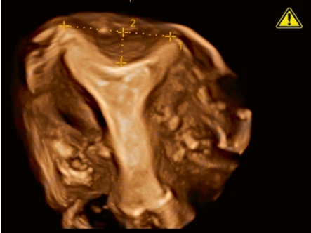
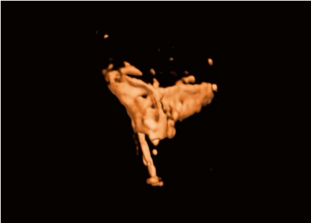
完全纵隔子宫。因此，弧形子宫被认为是更可能的诊断。
(c) 超声造影—输卵管和盆腔发现：
宫腔在开始注射造影剂时扩张，但双侧输卵管未显示（图 5.56）。观察到对注射有明显的阻力压力，患者感到剧烈、无法忍受的疼痛。提示双侧近端输卵管梗阻的诊断。
近曲小管病变通常以梗阻为特征，可分为以下几类：
- 结节性梗阻（由结节炎、子宫内膜异位症引起）
• 非结节性梗阻（由纤维化引起）
• 假性梗阻（由碎屑、粘液栓、息肉或痉挛引起）[4]。
plete septate uterus. Therefore, an arcuate uterus was considered a more likely diagnosis.
(c) Contrast-enhanced ultrasound—fallopian tubes and pelvic findings:
The uterine cavity was distended at the initiation of contrast medium injection, but the bilateral fallopian tubes were not visualized (Fig. 5.56). Significant resistive pressure against the injection was observed, and the patient experienced severe, intolerable pain. A diagnosis of bilateral proximal tubal obstruction was suggested.
Proximal tubal pathology is typically characterized by obstruction, which can be classified as follows:
- Nodal obstruction (due to nodulitis, endometriosis)
• Nonnodal obstruction (due to fibrosis)
• Pseudo-obstruction (caused by debris, mucus plugs, polyps, or spasms) [4].
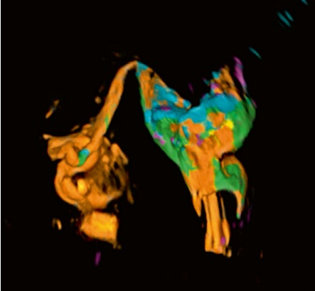
为排除假性梗阻（例如痉挛引起的），建议进行第二次增强造影检查。
此次，造影剂以缓慢的低速率注射。患者感到轻微疼痛但配合良好。在逐渐增加注射压力后，可显示右输卵管（图5.57和5.59），可见远端段扭曲，并在散着端看到造影剂溢出。根据这些发现，诊断为右输卵管部分梗阻。左输卵管未被观察到，散着端无造影剂溢出，左卵巢周围无造影剂扩散，诊断为左输卵管近端梗阻。
盆腔内无明显粘连或异常影像学发现。
(d) 生理盐水灌注超声（SIS）的发现（图 5.58 和 5.59）：
尽管宫腔内残留了大量造影剂，但生理盐水的加压注射稀释了造影剂，这对子宫病变的诊断没有影响。考虑诊断为子宫内膜息肉，因为在子宫前壁可见一个边界清晰、回声稍高的肿块，大小约为 $ 1.0 \times 0.5 $ cm。
- 医疗建议：
建议患者短期内尝试自然受孕。如果此方法不成功，可考虑进行宫腔镜检查，以进一步评估和治疗子宫内膜息肉和近端输卵管梗阻。
To rule out pseudo-obstruction (e.g., caused by spasms), a second contrast-enhanced imaging was recommended.
This time, the contrast medium was injected slowly at a low rate. The patient experienced mild pain but was cooperative. After gradually increasing the injection pressure, the right fallopian tube was visualized (Figs. 5.57 and 5.59), showing a distorted alignment of the distal segment, with contrast overflow seen at the fimbrial end. Based on these findings, a diagnosis of partial obstruction of the right fallopian tube was made. The left fallopian tube was never visualized, with no contrast overflow at the fimbrial end and no diffusion of contrast around the left ovary, leading to the diagnosis of proximal obstruction of the left fallopian tube.
No significant adhesions or abnormal imaging findings were present in the pelvic cavity.
(d) SIS findings (Figs. 5.58 and 5.59):
Although a significant amount of contrast medium remained in the uterine cavity, the pressurized injection of saline diluted the contrast agent, which did not affect the diagnosis of uterine pathology. A diagnosis of an endometrial polyp was considered, as a moderately echogenic mass measuring approximately $ 1.0 \times 0.5 $ cm with clear borders was seen in the anterior wall of the uterus.
- Medical advice:
The patient was advised to attempt conception naturally for a short period. If this approach is unsuccessful, hysteroscopy may be considered to further evaluate and treat the endometrial polyp and proximal tubal obstruction.
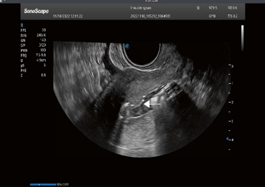
病例 5
- 病史：
患者为一名39岁的女性，月经周期规律，无痛经。她有一次妊娠（未分娩），并患有10年不孕症史。
子宫输卵管超声造影 (HyCoSy) 成像图（图 5.60 和 5.61）
分析与诊断
(a) B模式超声：
子宫呈后倾位，轮廓光滑完整，回声均匀。宫腔内可见水球状结构。发现多个子宫肌瘤，其中最大者位于子宫后壁。左侧卵巢与子宫体相近，活动度受限。右侧卵巢位于子宫右侧宫颈外侧，活动良好。双侧附件区未见病变。
(b) 超声造影：
宫腔形态光滑规则。关于输卵管通畅性，超声造影（图5.61）显示整个
Case 5
- Patient history:
The patient was a 39-year-old woman with regular menstrual cycles and no dysmenorrhea. She had one pregnancy (with no delivery) and had been experiencing infertility for 10 years.
HyCoSy imaging (Figs. 5.60 and 5.61)
Analysis and diagnosis
(a) B-mode ultrasound:
The uterus was retroverted, with smooth and intact contours and homogeneous echogenicity. A water balloon was clearly visualized in the uterine cavity. Multiple fibroids were observed, the largest of which was located in the posterior wall of the uterus. The left ovary was positioned close to the uterine body, with limited mobility. The right ovary was located away from the cervix on the right side of the uterus and showed good mobility. No lesions were observed in the bilateral adnexal regions.
(b) Contrast-enhanced ultrasound:
The uterine cavity appeared smooth and regular in shape. Regarding tubal patency, contrast-enhanced ultrasound (Fig. 5.61) showed the entire
右输卵管可见僵硬的排列和明显的局部反射。在输卵管末端可见造影剂溢出，造影剂均匀地分散到右卵巢周围。左输卵管间歇性可见，显示中段截断、略迂曲的走行和相当僵硬的形态，输卵管末端无造影剂溢出。造影剂在左卵巢周围分布不均。
观察到子宫肌层内有造影剂返流回声，造影剂在盆腔内分布不均，与右侧相比，左侧造影剂明显较少。根据这些发现，诊断为右输卵管部分梗阻和左输卵管远端完全梗阻。
(c) 盆腔内发现：
B模式超声显示左卵巢活动度受限。超声造影显示有少量造影剂环绕左卵巢，盆腔内造影剂弥散不均并可见带状回声（图 5.61），提示粘连。
(d) 生理盐水灌注超声（SIS）成像：
生理盐水灌注超声（SIS）显示宫腔内有边界清晰的中等回声肿块，符合子宫内膜息肉。
- 医疗建议：
考虑到患者年龄较大、右输卵管部分梗阻以及左输卵管远端完全梗阻，建议尽快进行体外受精治疗。
right fallopian tube visualized with a stiff alignment and obvious localized reflection. Contrast overflow was seen at the fimbrial end, and the contrast medium dispersed evenly around the right ovary. The left fallopian tube was intermittently visualized, showing truncation at the mid-section, a slightly tortuous course, and a rather rigid morphology, with no contrast overflow at the fimbrial end. The contrast agent was unevenly distributed around the left ovary.
Echoes of contrast reflux within the myometrium were observed, and the contrast agent was unevenly distributed in the pelvis, with significantly less contrast on the left side compared to the right side. Based on these findings, a diagnosis of partial obstruction of the right fallopian tube and complete obstruction of the distal section of the left fallopian tube was made.
(c) Intrapelvic findings:
B-mode ultrasound showed limited mobility of the left ovary. Contrast-enhanced ultrasound revealed minimal contrast agent encircling the left ovary, with uneven contrast diffusion and band-like echoes in the pelvis (Fig. 5.61), indicating adhesions.
(d) SIS imaging:
SIS showed a mid-echogenic mass in the uterine cavity with clear borders, consistent with an endometrial polyp.
- Medical advice:
Given the patient's advanced age, the partial obstruction of the right fallopian tube, and the complete obstruction of the distal section of the left fallopian tube, the patient was advised to proceed with IVF treatment as soon as possible.